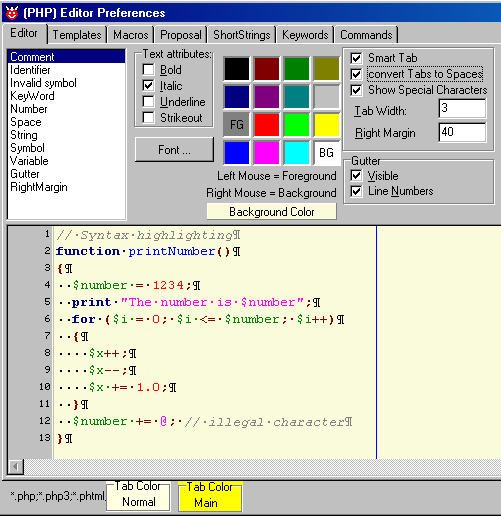
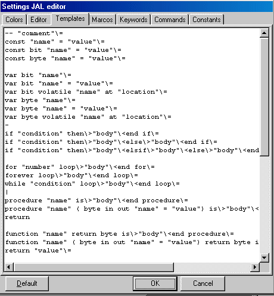
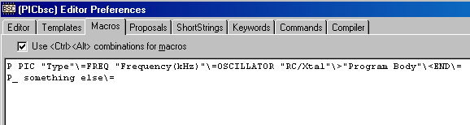
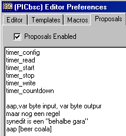
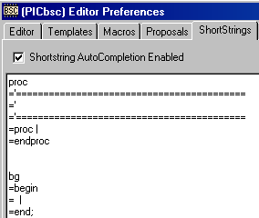

January 2005
CodeEditor Settings
Introduction
You can enter the editor (and compiler) settings either through the mainmenu (Settings / ... Settings) or through the right mouse menu in the editor (Editor Settings). Depending on the filetype in the editor more or less tabs may be shown.
In this chapter only the general settings are discussed, see the special code editors for the individual extra settings.
Visual appearance
At the top-left there's a list with all the elements that are recognized. This lists may differ, depending on the filetype. Selecting an item in the list, will show the attributes (font, color) of the selected item. Changing can be done by clicking the appropriate attribute or color. The font is shared among all the items. When selecting a font, only the fonttype and fontsize are relevant, because the other font attributes are overridden by the attributes of the individual items.
"Space" is a special item, which is the same as the general background. So when selecting space, all the attribute controls are made invisible.
The background color can be setting, by pressing the panel "Background Color", this will popup the normal windows colordialog, so you add a subtle color to the background.
When "Smart Tabs" is enabled, tabbing jumps to the next non-white space form the lines above and the tabs are implemented as intend.
"Convert Tabs to Spaces" will convert all inserted tabs into spaces. Also on opening a file, tab-characters are replaced by spaces, if this option is set.
"Tab Width" specifies the tabwidth, when smart tabs are disabled or when no non-white space is in the above lines.
"Show Special Characters" will show all non-printable characters (like CR / LF).
"Right Margin" specifies the position of theright margin, specified in characters. When you don't want to see the right margin, set the position to zero.
The gutter is necessary if you want to use the special markers. Normal bookmarks (although not visible) still work when gutter is invisble.
At the bottom you can set the color of the tab in the main program.
In the middle, the preview editor is shown. The preview editor shows a standard text, you can edit the text to view highlighter effects, but changes are not stored. But you can supply your own example file, by putting the file in the main program directory, with the name "EDT_SAMP.<ext>" , where extension is the default extension for the selected application. So for JAL you should supply a file called "EDT_SAMP.JAL"

Templates
|
Templates can be simply edit in the memo shown on the right. This is just a very simple texteditor like notepad. Each line represents 1 template.
You can use the following codes to format the inserted text (these codes alos yields for macros)
- A single - symbol means a horizontal separator | A single | symbol means a vertical separator \= Go to the next line \> Go to the next line with an indentation \< Go to the next line out of an intendation "name" Field to be inserted A template should always end with "\=" , otherwise the automatic insertion doesn't work correctly. |
 |
Macros
You can add macros to <Ctrl><Alt><X> and <Ctrl><Alt><Shift><X> , where <X> is a single letter 'A' .. 'Z' or digit '1' .. '9'.
The formatting syntax is the same as shown above for templates.
The macro must fit on a single line, and should start with character of digit you want for <X>.
The shift is invoked by entering a underscore at the second position of a line. There must be at least 1 space between the <X> and the content of the macro (which is not part of the content of the macro).
JALcc automatically orders the macros and will translate the <X> character to uppercase.

Proposals
The proposals can be edited here. They are not ordered, because order should be set by the user, to get the most significant items at the top.

ShortStrings
Shortstrings can be edited here.
The word that should be typed by the user, should be placed on a new line, without any preceeding characters.
The code that should be generated follows on the next lines, all preceeded by an equal sign ("=").
Below is an example for the words "proc" and "bg".
